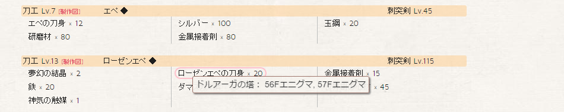
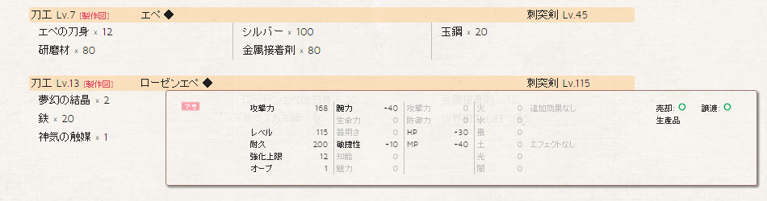

我々の人生や選択は量子の軌跡のように瞬間ごとに意味づけられる
人生が交差する瞬間それぞれの出会いが新たな方向性を指し示すのだアイザック・サックス クラウドアトラス（映画）
Our lives and our choices like quantum trajectories are understood moment to moment.
At each point of intersection each encounter suggests a new potential direction.Isaac Sachs Cloud Atlas (movie)
初めて MMORPG にして約５年ほどプレイしたドルアーガの塔～the Phantom of GILGAMESH～が 2016 年 3 月 31 日をもってサービスを終了しました。 サービス終了に伴って失ったものとコンテンツを想い出が色あせる前に私の視点で振り返ろうと思います。
はじめたきっかけ
無意識のうちに私の足は向かっていた "いけにえの神殿" 私が純潔を捧げた場所へティモシー・キャヴェンディッシュ クラウドアトラス（映画）
Before I realized it, my feet had borne me back
to the Temple of Sacrifice where I offered up my virginity.Timothy Cavendish Cloud Atlas (movie)
訪れる孤独感
冬の夜、無性に淋しさを覚える事があります。 そのような時はインターネットのチャットルームで誰かと話して淋しさを紛らわしていました。 そのような淋しさの紛らわせ方を行い始めて数年後、利用していたチャットルームはサービスを終了。 ハンゲームのチャットは（一時的な）交際目的が大半を占め、今すぐ会う場所を取り決めるために使われており健全ではありませんでした。 他のチャットサービスも見つけにくく、ふとオンラインゲームなら誰かいるんじゃないかと思って始めたのがきっかけです。
ドルアーガの塔～the Recovery of BABYLIM～を選んだ理由
始めたころはテレビアニメ「ドルアーガの塔 〜the Sword of URUK〜」（二期）を放送しており視聴してました。 このアニメをみて幼いころ迷路でスライムにすぐ食べられてしまうゲームがあったことを思い出していました。 何をすればいいかわからず、適当に歩いてもすぐ食われて終わってしまう謎のゲーム。 ゲームもタイトルも覚えておらず一人暮らしなので古いファミコンソフトをあさることもできません。
アニメ「ドルアーガの塔」放送の合間の TVCM やハンゲームにてチャネリングサービスが開始された直後でよく MMORPG のタイトルを目にしてました。 どういうゲームか調べていくうちにその幼いころの謎のゲームがこの MMORPG のオリジナルであることを知ります。 幼いころの「無念を晴らすため」にもと思いドルアーガの塔 RoB を選びました。
育成キャラクター
私は生まれて初めて自分が何者であり何者になるべきなのかじっくりとみつめたソンミ 451 クラウドアトラス（映画）
For the first time in my life, I was allowed to see who I was and who I might become.Sonmi~451 Cloud Atlas (movie)
1st キャラクター
クラス選択
コンシューマーゲームの RPG では操作する人１人でなんでもできました。
しかし、MMORPG では１人１キャラ操作で職業は勇者と言ったようなオールマイティの職ではなく何かに特化しています。
体力減る一方だと困るので攻撃ができて回復もできるドルイドを選択しました。
もっとも、戦えるのは序盤だけであとあとは事実上モンスターを倒すことは不可能に近かったですが…
公式サイトの職業紹介であった情報を鵜呑みにしただけでそのような事は知るよしもありませんでした。
キャラクターの誕生
はじめてキャラクターを作成してドルアーガの塔の世界に降り立ったのは、土曜日の朝８時半ごろだったと思います。 ほんとに最初は移動方法もわからず、その場で旋回したり縦か横移動だけのまるで将棋の飛車のような動きをしてました。
NPC の入国審査官リーンさんからネズミを狩るクエストを受注します。 戦闘方法もわからずなんとなくやってると、そこを通る人がヒールを投げて去っていく優しい世界。 でも、戦闘方法はわかっていません。 １匹倒す前か倒した直後ぐらいに一人の方が声をかけてくれました。 その方も始めて間もなかったですが、いろいろ戦闘方法をはじめとする最低限の事を教えていただけたので感謝しています。 もし、あの時声をかけていただけなければあきらめてやめていたかもしれない。 もう、その方は Lv.8 ぐらいで引退されてしまいましたが…
初期の想い出
その日の夕方、ドルアーガの塔周辺（というマップ）でファイター（タンカー）とメイジの二人組から声をかけられ最初期の頃を過ごしました。
Lv.17 程度になるとダンジョン エルブルズの岩穴のパーティーなどで多くの人に出会いました。
Lv.26 （ユーフレイト東岸）でレベル上げに少し詰まったこともあったけどその後は順調にレベル上げできたと思います。
Lv.56 ぐらいで 1st キャラを一度削除して作りなおしましたが作り直し後のレベル上げの記憶はあまり残っていません…
多キャラクター育成
心に余裕がでてきたので１アカウント当たりのキャラクター作成上限である３キャラはそこそこ扱えるようになってました。 最終的には１アカウントあたり５キャラまで拡張されましたが、引退後なので後の祭り。
最初のサブ（ネタ）キャラ
1st キャラクターをメインキャラと呼び２番目以降に作ったキャラクターをサブキャラとすると、最初に作ったキャラはドルイドでした。
1st キャラクターと同じ職業ですが、まじめに作ったのではなくフィギュアとして作ったので。
まともなサブキャラ
さらにその後に作ったのがファイターです。
ダンジョン ドルアーガの塔に上るときファイターが必要となることが多いですが（特に序盤フィールドではいらなくてもよかった）ファイターが知人の中でいなかったからです。
また、初日に出会ったお二方はすでに引退されてしまいました…
1st キャラクターが育った後、ちゃんと育てたのはおそらくこのキャラクターだけです。
まともなサブキャラ（２つ目）
あとは、２次職になりエンチャンター（メイジから派生）のクリティカル率を上げるフォーススピリットというスキルに憧れてメイジを作りました。
しかし、アークメイジ（メイジの３次職でエンチャンターとは別系統）に憧れてキャラクターをデリーとして作り直しました。
最終的には Lv.112 になりましたがおんぶにだっこでレベル上がったので自力で上げたとは言い難い…
ということで、実質２キャラを育てたまでにとまりました。
キャラクターの最終レベル
みらみく ビショップ Lv.116
— みく(๑╹ω╹๑) (@miramiku) 2016年3月31日
みりみく セイバー Lv.112
みるみく アークメイジ Lv.115
みれみく レンジャー Lv.55
ちろみく ドルイド Lv.18 → オラクル Lv.120
でした。レベル上げとかでＰＴ組んでくれた方々どうもありがとうございました＞＜；
上記ツイートは２アカウントです。ちろみくはサービス終了前に GM さんが手動でレベルアップ対応していただいていたのでその時に Lv.18 から Lv.120 にしていただきました。
コンテンツ
9 月 18 日の出来事についてあなたの視点から話してください記録官 クラウドアトラス（映画）
Please describe the events of September 18th, from your perspective.Archivist Cloud Atlas (movie)
ダンジョン ドルアーガの塔
踏破状況
ほとんどのフロアを登りつくしました。 32F はスイッチの場所わかってないし、34F は結局モンスターの配置とか理解できなかったし… 58F ～はサービス終了前に２度ついていっただけでした。
ダンジョン ドルアーガの塔は MMORPG のタイトルにもある通りメインコンテンツです。 しかし避けている人も多かったと思います（少なくとも初期のころは多かった）。 デスペナルティーが適用されないのでモンスターがフィールドに比べて強くかつレベルもフロア数×２に制限されてしまいます。 フロアに応じてスキルショートカットを入れ替えたり、装備の制限レベルが自レベルを超えていると Lv.1 相当に強さになってしまいますので装備を付け替える必要もありました。 エニグマの解読に失敗しないためにエニグマの解き方を予習する必要がありました（未解明のエニグマを解読するのはエンドコンテンツ扱い）。 モンスターが強いから基本的には５人パーティー（パーティーは５人制限）を組む必要がありました。 職業もバランスがよくなければなりません。 それらの事情により敷居が高かったです。
そのような状況の中、頻繁に上ることができた私は幸運だったと思います。
何のために登るのか？
ダンジョン ドルアーガの塔は何のために登るのか？
塔はエニグマを解読して一攫千金を行う宝島になっていました。
登れる人は登って宝を持ち帰り、登れない人はフィールドでお金を集めて買う。
お金を集められない人はがんばって練習して登れる自力でアイテムを入手しました。
そのような状況に変化が起こったのが、2013/04/24 に第１弾が行われた Re:form （[略史](#資料-mmorpg-ドルアーガの塔-略史)も参照）と呼ばれる改革。
大幅なてこ入れのはずが経済バランスを崩壊させました。
エニグマ 100 個追加（カウントすると 100 以上あった）や内装変更は別によかったのですが、褒章アイテムの総入れ替えがまずかった。
宝島でなくなったドルアーガの塔にはもう登る意義を失ってしまいました。
Re:form で行われた新エニグマシステムと内装の変更は最終的には 1F - 10F までと Re:form 以降に実装されたフロアのみにとどまり中途半端に終わってしまいました。
公知のローカルルール
塔でのパーティーはフィールドでのパーティーとは性質の異なるため、塔パーティーと呼ばれてました。 そこには最後の宝物分配時にローカルルールがありました。 塔頂終了後にドルアーガの塔 1F に入り入手したアイテム（著しく市場価値の低いものを除く）を１銅（通貨最低単位）で露店にだしリーダーが回収します。 リーダーがまた１銅ですべて出品してダイスを振り高い順に１番目→５番目、５番目→１番目、１番目→…という折り返しの形式で１つずつ好きなモノを受け取っていきました。 この周知のローカルルールはどこかに明文化されているわけでもなく、口承により適用されていきました。 はじめて見知らぬ人と塔登った人は知るよしもなく混乱を招きます。 私も最初は困惑しました。 その辺のことを予想また後付でもいいのでシステムとして組み込んで欲しかったと思います。 後付でできたのはそれ関連のシステムはダイスだけのようです（私が始めたときはすでに実装済みでした）。 ダイスが実装される前はゲーム内時間に合わせてチャットでじゃんけんを行っていたそうです。
塔の最上階
ドルアーガの塔の59階では1パーティーでは戦えないほどに強い敵を出したいですし。 そこまでよりそこから先が面白いので関わっていきたいですね。 塔も60階で終わりにしたくありません。100階や、200階でも。 （中略） 現在のゲーム内の塔は初期のイメージそのままですが、60階以降は大きく変化する可能性もあります。GAME Watch [「ドルアーガの塔 ～the Recovery of BABYLIM～」
スーパーバイザー遠藤雅伸氏インタビュー](http://game.watch.impress.co.jp/docs/interview/20100830_390501.html)
上記のインタビューよりドルアーガの塔は 60 階では終わらないものだと思っていました。 2013 年末頃までですが。 その後、60 階実装がしぶられたので悟ってしまいました。 最終的には 59 階もクラスにより１人で倒せちゃうほどのバランスに落ち着いてしまったようです。
サキュバスの窟（あな）
2009 年の夏休みに合わせて実装される予定だったダンジョン。
ドルアーガの塔で（自動的に）取得できる混沌の血は事実上コンシューマーゲームでいうスコアであって使い道がありませんでした。
それの使い道として、またドルアーガの塔は最大塔頂回数がパーティー内の最低レベルのプレイヤーに依存したり、原則的に 5 人パーティーが要求されていたので気軽に 1 人または少人数で楽しめるコンテンツとして。
実装当時の思い出
8 月の（たしか）上旬に実装予定でしたが、中旬、下旬と伸び最終的には 8 月 31 日の（たしか）26 時に実装されました。 夏休みのコンテンツなのに 8 月中に実装されなかった… また、実装直後にアイテム消失事件がいたるところで発生。 メールでのマニュアル対応が行われて大変だった記憶があります。 当時、一緒にプレイした方も消失したみたいですがメールしなかったそうです（本人証言）。 [現在確認されている不具合について (Internet Archive)](http://web.archive.org/web/20160308184656/http://druaga-mmo.com/top/information_detail.action?id=1285) を参照すると再公開と公開停止を繰り返して最終的に 9 月 10 日に公開停止したままだと思われます。 しばらくして、当分の間の公開停止が正式発表されて 2010 年 2 月 3 日の再公開されました。 以下のインタビューの通り、地下 100 階までを目標に実装予定だったようですが再公開以降（つまり初回実装のみで）目立ったアップデートはついぞありませんでした。
大槻氏：
最初は地下20階まで実装し，最終的には地下100階を目標に拡張していく計画です。4Gamer.net [レベルを問わず少人数でも楽しめる新ダンジョン「サキュバスの窟」の内容に迫る！
「ドルアーガの塔」運営スタッフインタビュー](http://www.4gamer.net/games/029/G002948/20090717043/)
プレイ記録
ダンジョンの特徴として以下のようなものがありました。
入るたびに構造が変化する仕組みになっており，いつでも新鮮な気持ちでチャレンジが可能。内部には毒やテレポートといったトラップが多数配置されており，どうやらモンスターとの戦闘よりも，これらの罠を回避する攻略性を重視したものになるようだ。4gamer.net [この夏，新ダンジョンがやってくる！
「ドルアーガの塔」次期大型アップデートの最新情報を公開](http://www.4gamer.net/games/029/G002948/20090610041/)
 採取したマップ（一部）
採取したマップ（一部）
蓋を開けてみると実際は入るたびに構造は変化しますがせいぜい 10 フロア単位で高々 100 パターン（おそらく 70 程度）からの抽せんでした。
深淵の穴というのを見つけてフロアを下りますが、同一マップの場合は同じところに存在していました。
マップをランダム生成しているのならば同じマップになることはまれでしょうしかつ深淵の穴まで同じ場所であることはほぼないでしょう。
トラップ回避が攻略の鍵かのような記載がありますが、トラップの回避手段は運以外を除いてありませんでした。 確実または確率的にトラップ発動を抑止するアイテムをダンジョン内モンスターを倒して入手する程度。 そして、それらのアイテムはダンジョンから脱出時に高確率で消失しました。
大魔導の結界
多人数での戦うコンテンツ。
定期メンテナンス後から土曜日の 22 時まで溢れ続けるモンスターと戦う冥（くらやみ）の裂け目と 22 時から 23 時にさらに奥で強力モンスターと戦う力の間がありました。
力の間には最初無制限に入れましたが人数が多すぎてサーバーダウンが起こったような起こらなかったような。
すぐに定員制になりましたが、最初は先着順だったのでオープン後 0 秒で満席となって不満続出。
さらに少しして開始 21 時 30 分から受付開始、22 時抽せんの形式になりある意味平等になりました。
しかし、倍率は高く 22 時に一喜一憂があったようです。
私は数回しか行っていませんが、タコ殴りにしておりな印象。
１度、強力モンスターが追加されて倒せないことがありましたが弱体化されて討伐失敗する事はなくなりました。
討伐成功時の褒章は日曜日 0 時から 24 時までデスペナルティ無効でした。
討伐失敗はありえなかったので日曜日はデスペナルティの事実上撤廃でした。
オフランディヴィーヌ闘戯会
| 開始時刻 | 参加条件 | |
|---|---|---|
| Lv.30 戦 | 18:00 | Lv.10 以上 |
| Lv.50 戦 | 19:00 | Lv.30 以上 |
| Lv.70 戦 | 20:00 | Lv.50 以上 |
| Lv.90 戦 | 21:00 | Lv.70 以上 |
パシュム ブルー、ウガルル ヴェールとギルタブリル ルージュの各定員 30 名の勢力に別れて大規模対人戦を行うコンテンツ。
観戦は 100 名まで可能。
こちらは力の間（[大魔導の結界](#大魔導の結界)）より後に実装されたのであらかじめ抽せん制でした。
活躍に応じて名声ポイントが得られ集めた名声ポイントを交換することでアイテム（専用アイテムあり）と交換できました。
毎週日曜日の 18 時から１時間毎に計４時間にわたって開催されました。
キャップレベルを超えていてもキャップレベルまで抑えられるので上限はありません。
キャップレベルが高いほど名声も効率的に稼げたようですが、Lv.110 キャップは結局のところ開催されることはありませんでした。
公開テストが行われました十分にユーザーが集まらなかったようです。 推測ですが"大規模対人戦"というコンテンツに興味を持たれなかったと思われます。 私も公開テスト用クライアントをダウンロードすることはありませんでした。 定員オーバーしたら全体褒章で経験値アップの特典が提示されましたが公開テストでは定員を超える事が無く、全体褒章はむなしくも適用されませんでした。
全体褒章で釣っても食いつかなかったコンテンツですがほどなくして即座に HP や MP を回復する課金アイテムの消耗品の使用不可にするなどの調整を行い正式実装されました。 実装された当初は定員オーバーが続きました。 観戦も 100 席あれど同時刻の抽せん式なので抽せんに漏れると、席が余っているはずの観戦に回ることができませんでした。 観戦は抽せん時刻をずらしていただけたらよかったんですけど…
実装直後は満席が続きましたが次第に各勢力 30 名に満たなくなりました。 開催曜日や１日の開催数を増やしたり、名声ポイントを２倍３倍や７倍などかなり倍率が上がりましたが賑わうことはありませんでした。 勢力が優勝すれば最終的に獲得できる名声の倍率が上がりますが、名声を効率的に稼ぐことが目的と化して事実上個人戦になっていました。 勢力で同じ名声ポイントが獲得できれば個人戦にはならなかったと思いますが、そうするとタダ乗りの可能性も考えられます。 慣れてない人が参加するとただマトにされるだけで当人は殺されて復活するの繰り返しで名声を稼ぐことができずむしろ誰かに名声を稼がせるだけのエサにしかなりませんでした。
強化システム
| 強化値 | 金額 | 累計 | 強化値 | 金額 | 累計 |
|---|---|---|---|---|---|
| +1 | 800 円 | 800 円 | +7 | 1,500 円 | 6,500 円 |
| +2 | 800 円 | 1,600 円 | +8 | 5,000 円 | 11,500 円 |
| +3 | 800 円 | 2,400 円 | +9 | 10,000 円 | 21,500 円 |
| +4 | 800 円 | 3,200 円 | +10 | 20,000 円 | 41,500 円 |
| +5 | 800 円 | 4,000 円 | +11 | 21,000 円 | 62,500 円 |
| +6 | 1,000 円 | 5,000 円 | +12 | 22,000 円 | 84,500 円 |
また装備の問題もあり課金装備やレア装備を多額（右表参照）の費用をかけて装備強化したものを使います。 実際に強化成功保証のアイテムを使って強化していたかはわかりませんが（私は +3 以降は使っていました）武器１防具５カ所（プラス盾やもう１本の剣）の強化装備を用意していました。 ちなみに、強化に失敗すると装備は消失します（消失防止アイテムあり。１つ 100円相当。自動消費）。 一説には +5 で強化成功率 6% ～ 8%、それ以降は 1% と強化成功保証アイテムを使用せず強化できるものでは到底ありません。 のちに強化成功率は上方修正され成功率を上げるゲーム内および課金アイテムが実装されましたが私は知りません。
（オフランディヴィーヌ闘戯会の話に戻ります） 私が知っている限り闘戯会は実に札束で攻撃し、札束で攻撃を受け止めていた状態でした。 また、名声ポイントの交換アイテムに強力なバフアイテムや強化成功率を上げるアイテムがあったため闘戯会で強い者はより強くなり新参者はより排除されやすくなりました。
幻の塔
新たな [ダンジョン ドルアーガの塔](#ダンジョン-ドルアーガの塔) ライクのコンテンツだと思って期待していました。 申し訳ないことに５名の先行テスターにも選んでいただきました。 今はもう非公開すが右のスクリーンショット（保存しているソースコードを基に再構築したレプリカ）での通り情報を発信するという約束は一応果たしたつもりです。 色々とすみません。
ツールを頂いてすぐに中身を確認したんですが幻の塔は何かの魔力を持っていたようで MMORPG ドルアーガの塔に対する気力がなくなってしまいました。 テスト期間（１週間）の初日をもって引退を決意しほとんどログインしなくなりました。 テスト期間の最終日にレビューを公開をもって私のドルアーガ生活は隠居に入りました。
ほどなくして幻の塔およびそのエントランスである常春の庭が正式公開されました。
幻の塔は 2008 年春に放送したアニメ（１期）で主人公一行他が塔頂したドルアーガの塔最上階から入ることが可能な塔で、2009 年冬に放送したアニメ（２期）の主な舞台です。
常春の庭はアニメ（２期）の第７話で登場した常春の館を輸入したものです。
[ドルアーガの塔【常春の館】第７話分析 - 遠藤雅伸公式blog「ゲームの神様」](http://ameblo.jp/evezoo/entry-10212836304.html) の冒頭からその常春の館はアニメがオリジナルだと思われます。
その常春の庭から多くのマップに飛ばしてくれるので移動のためのハブとしても利用されていたようです。
私がプレイしたのはサービス終了の１日前に試しに数回入っただけで終わりました。
幻の塔のフロア製作者が設定した難易度（攻略推奨レベル）で分類され、難易度を選ぶと自動的にフロアを１つ選んでくれます。
選ばれたフロアは有料で再選択できますが自由に選択することはできません…
凝ったフロアの製作にはそれなりのコストがかかること、エニグマ解読の褒章も製作者が用意することに加え、解いた人が製作者を評価するときに利用するアイテムも有料などユーザーは得しない構造なのはどうなのでしょう
120レベルで60階に登頂するのはもちろんだけど、その先の「幻の塔」のコンセプトも既に考えてあるし、その先に待っている事態に関するストーリーも用意している4Gamer.net [「ドルアーガの塔」，年に1度の特別なイベント「超塔の日」を本日開催](http://www.4gamer.net/games/029/G002948/20121010031/)
■「幻の塔」とは
ゲームの80年後の未来を描いたTVアニメ「ドルアーガの塔～the Aegis of URUK～」、「ドルアーガの塔～the Sword of URUK～」にて登場した、 「ドルアーガの塔」最上階の更に上方に位置する建造物です。アニメの「幻の塔」は、主人公たちの最終目的地として描かれており、「幻の塔」最上階には、 物語の鍵を握る重要なキャラクター「黒ギル」が待ち構えています。4Gamer.net [「ドルアーガの塔」，サブタイトルを変更＆新コンテンツ「幻の塔」が12月に実装](http://www.4gamer.net/games/029/G002948/20131011097/)
この二つの幻の塔に関する情報から実際に実装された幻の塔が想像できたのでしょうか。
実装されたの幻の塔を知ったうえで好意的に解釈しても読み直しても一致してる内容は名前ぐらいなんですよね。
サブタイトル変更
一新されたロゴは何とも言えないおしゃれさがあるんだけどサブタイトルはダサく聞こえてしまう。
新しいロゴの印象が先進的で清潔であり、むしろゲームとのイメージは合っていない感じ。
the Recovery of BABYLIM ならバビリムという国を復興するために冒険者（プレイヤー）ががんばるストーリーの印象がありました。
それが、the Phantom of GILGAMESH となり[「ドルアーガの塔」，サブタイトルを変更＆新コンテンツ「幻の塔」が12月に実装 - 4Gmaer.net](http://www.4gamer.net/games/029/G002948/20131011097/) によるとギルの幻影という意味らしいです。
ゲームの目的がわからなくなり、コンシューマーゲームの前作や偉大な勇者の名前かはたまた災厄をもたらすラスボスと言った感じがして残念でした。
ちまたでの略称も RoB から PoG になり、発音でロブからポグとなり比較すると安っぽくダサくなった気がします。
公募でサブタイトルを決定しましたが、無理やり決めなくてもよかった思うのですが…
ところで、そのサブタイトルのギルの幻影ってなんなんでしょう？
アニメの黒ギルなのは説明されてますが MMORPG ではその影さえ感じることが出来ませんでした。
最もまぼろしの影なので感じないのが普通かもしれませんが…
アダトの庭
[サキュバスの窟](#サキュバスの窟-あな) が少人数用ダンジョンに対してパーティ用の新たなダンジョンとしてアダトの庭というものを名前だけ見ました。
しかし、いつしかマイルストーン（中長期アップデート計画）からも削除され実装するとも延期するとも告知がないまま黙殺された状態で終えんを迎えるに至りました。
どういうものかパーティ向けと言う以外なのも情報がありません。
やったこととできなかったこと
この作曲は僕にとって生まれて初めてした価値のある事ですロバート・フロビシャー クラウドアトラス（映画）
The "Atlas," I believe is the only thing I have done in my life that has value.Robert Frobisher Cloud Atlas (movie)
MMORPG ドルアーガの塔のゲーム外でやったこととできなかったことを記述します。 また、似たようなことを現在プレイ中の Wizardry Online でやっているかも合わせて記述します。
ウェブ関連
日替わりイベント
「イベントが少ない」という声を受けてひと月分の GM 主催イベントの予定が書かれたイベントカレンダーなるものが発表されました。
毎日ページをイベントカレンダーの記事をチェックしに行くのは大変なので本日の日替わりイベントを表示するものを作りました。
たぶん、私以外見てなかったので重要なイベントは Twitter で [#人力アラートみく](https://twitter.com/search?q=%23%E4%BA%BA%E5%8A%9B%E3%82%A2%E3%83%A9%E3%83%BC%E3%83%88%E3%81%BF%E3%81%8F) のタグつけてつぶやいたほうが悲しいことに広く周知されたみたいです。 のちに、人力アラートも Twitter のハッシュタグはそのままで自動化したんですけどね… それは「人力じゃない！」って声ありましたけど皮肉のまじったいい名称なので温存です。
期間イベント・キャンペーン
日替わりイベントの告知に続き、現在開催中の期間イベントやキャンペーンを表示するものを作りました。 また、初期のころの振り込みミス頻発が原因という説がありますがイベント・キャンペーンによるアイテム振り込みは終了後１週間遅れが多くなりました。 そのため、振り込みが終わるまでは表示されているようにも改良しました。
Wizardry Online では原則的に金曜日と火曜日（定期メンテナンス終了時）にイベント・キャンペーン予告、開催中、終了の記載がされているので似たようなことをする意義はないですね。
スキルシミュレータ
サービス開始して初期のころ、ウェブでスキルのシミュレーションができるツールがあったようです。 私も記憶では１度か数度お目にかかったことがありましたがすぐに消滅してしまいました。
キャラクタービルドにおけるスキルポイント振り分けというのがありますが後戻りは原則できません。 最悪、キャラクターを作り直すか（私は実際に作り直しました）、課金アイテム（3000 円相当）を利用する程度です。 実際にスキルを使用なくても思う存分スキルポイントを振りたい事はあります。 そのために復活をたびたびチェックしてましたが復活する事はなく、復活しないならば自分でいつかは作りたいと思い時が過ぎました。
ギルド勧誘イベント なる GM 主催イベントというものがありました。
その中で私にとって衝撃的なスピーチがありました。
それが以下の通りです。
そして初心者の悩みであるスキルのシュミレーションが出来るソフトを独自で開発して、 現在では、それをギルドメンバーは活用して頂いてます。このようにいろんな形で皆さん楽しく遊べるように努力してます。ギルド勧誘イベント 第８回第６番目にスピーチしたギルド様
スキルのシミュレーションができるソフトを独自に開発されておられました。 さっそく、ギルドのホームページに向かいダウンロードさせていただきましたが… まさかの MS Excel のワークシートにマクロによる数値チェックを施したものでした。 スピーチでのソフトの独自開発という言葉から想像していたものとのギャップに戸惑い、思いに任せて作ったのが私の作ったスキルシミュレータです。
スキルアイコンがモノクロなのは習得レベル不足を表し、赤枠は強化不可能で青枠は強化可能です。 キャラクタービルドを行うのにあたり真っ先に欲しくなるツールです。 Wizardry Online では [Wizardry Online Skill Simulator](http://skillwo.xii.jp/) という素晴らしいツールが存在していますので私が改めて作る意義はありません。 主に転職時のスキルポイントの算段に利用させていただいております。 ありがとうございます。
装備品検索
冒険をするうえでかかせない装備。 ダンジョン ドルアーガの塔に塔頂するときはフロアに応じて装備も着替えなければなりません。 特性に応じた装備を選択する為にも装備の効率的な抽出が必要でした。
目的は未知の装備を探すこと、つまり装備の抽出が目的なので最初はワード入力欄がありませんでした。
しかし、特定装備の入手経路や情報が知りたいという目的もでてきます。
また、入力データ確認の際も毎回抽出条件を入力するのは面倒だったのでワード入力欄を設けました。
そして、装備の強化推定値も強化の伸び率が判明している強化値までは表示されるようになっています。
データベースが最初は JavaScript の変数（定数扱い）だったのが、JSON 形式になりまた軽量化されました。 ゲームのアップデートのたびにデータベースは肥大化していきます。 そして、JSON 形式のデータベースなので毎回、全装備データをダウンロードする必要がありました。 それを解決するためにサイトを PHP で制作し、データベースを SQLite にすることで検索結果のデータだけをダウンロードするだけで通信量を減らそうと思いました。 しかし、実際に運用してみると JSON 形式の時よりも遅くなってしまいました…。 サイト全体を含め、改良のたびに新しいスキルを身につけていけたと思います。
ゲームをプレイするうえで真っ先に困るスキルポイントの割り振りは [Wizardry Online Skill Simulator](http://skillwo.xii.jp/) の恩恵により解消されました。 しかし、装備の問題が残っています。 Wizardry Online はドルアーガの塔と違い状態異常耐性というステータスがあり、状態異常に対応できる装備を整えるなど装備の重要性が増していました。 さらに、装備時に付与される効果などもあり単にレベルに対応した装備を揃えるだけではいけませんでした。 シナリオの攻略状況が先端に到達したのを機に装備品検索のようなものを作ることを決意しました。 そこで作ったものが [Cypress - wizardry online equipment data retrieval system](https://miramiku.github.io/Cypress/) です。
どこにも言及していないのでここでやってしまいます。
Cypress （イトスギ）がシステムの名称で、Cypress だけでは何なのがさっぱりわからないので説明的サブタイトルとして wizardry online equipment data retrieval system （Wizardry Online における装備品検索システム）という長ったらしいものがついています。
唯一であれば支障はないですが、Wizardry Online 装備品検索という名称ではどなたか似たようなものを作られたとき、区別するために誰々の装備品検索などよ呼ばないといけなくなることと、システムとして固有名詞を与えるべきだと思っているためです。
基本的には Wizardry Online の装備データに適応させた移植ですが PHP + SQLite では運用上速度が遅いことは経験済なので JSON 形式に先祖帰りしました。 毎回データベースの全ダウンロードという無駄なデータ通信が気になっていますが、装備登録数は公開時点でドルアーガの塔より若干少なく、現在では超えている状況ですが極めて読み込みが遅いということもないようです。
装備品検索の気がかりな点としては、検索条件（フィルター）は毎回使うわけでもないですが条件項目の多さから結構なスペースを占有していました。
また、装備データの表示の仕方も気がかりでした。
所定のスペースに項目をいれていくと記載する情報が増え、結果的に文字を小さくしなければなりません。
紙に印刷された文字ならば小さくても読めますが、ディスプレイではある程度の大きさがないと読みにくいものになります。
さらに、ディスプレイの横のサイズは年々大きくなっていますが、目の左右の運動には限りがあるので無秩序に横長にはしたくありませんでした。
そこで、データの表示を表形式から脱却し Tweedle（現在はダウンロード不可のもよう）の着想をへてカード形式にしました。
カード形式にしたことで１装備当たりのデータ表示スペースが縦横固定のに対し、縦の長さが可変になりました。
単独のサイトであるので、サイトのメニューなどがなくシンプルですっきりしています。
検索条件を指定するスペースについてもドルアーガの塔の装備品検索は上部に固定でした。
Cypress は右側の開閉パネルに収まったので再検索するときもわざわざ上部までスクロールしなおす必要も無くなりました。
そして、ウィンドウの横幅が狭い場合は装備データの記載されたカードに重ねてしまうことで検索条件用の余分なスペースも不要になりました。
私個人として大抵の場合は明るい背景に黒い文字にデザインしがちですが Wizardry の世界観に合わせて不慣れですが濃い背景に白文字のデザインを頑張ったつもりです…。
まだ、ドルアーガの塔の装備品検索であった機能が Cypress で実現できていないものがあります。 データ項目を含め未実現機能と、主に UI 関連で実装が捗らない機能があります。 それらを実装すればひとまず Cypress の開発を終えて保守に徹することができると思います。
生産検索
エペ ◆の入手経路

ローゼンエペの刀身の入手経路

ローゼンエペ ◆の装備性能
生産システムにおけるデータベースです。 電子文書の特徴をもっとも活用しており、私が作ったものの中でもっとも出来がよかった（完成度が高い）と思っています。
製作図の入手経路、各種素材の入手経路と生産アイテムが装備ならば装備の性能データが所定の場所にマウスカーソルを合わせることで表示されます。 装備の性能データは装備品検索のシステムのコア部分を共用利用し生産検索独自の機能を組み込んでいます。 装備データの表示形式も全く同じではなく装備種別、装備名は生産レシピデータに記載があるため、（装備の）入手経路は自明なので記載がないなどの違いがあります。
コアの部分と独自の部分の分離は Cypress でも行われており、[cypress.core.js](https://miramiku.github.io/Cypress/features/cypress.core.js) と [cypress.retrieval.js](https://miramiku.github.io/Cypress/features/cypress.retrieval.js) に分離されています。
また cypress.core は、[要データ取得装備リスト](/post/wizon/cypress/non-evidence-list/)（装備品検索における欠損レコード抽出機能相当）にて利用しています。
クエスト検索
あまり利用機会はないですがクエストデータベースです。 クエストは所定のマップでないと受注できないので現在のレベルで受注できるものやクエスト報酬にある生産素材を探すなどの目的のために。
NPC にマウスカーソルを当てると所在マップが表示されるんですがうまく動作しませんでした（修正するとアーカイブの意味がないのでそのまま）。 また、検索 UI も文字が収まってなかったりしますがブラウザの互換によるものだと思います…。
落ち着いたら、Wizardry Online でミッションデータベースみたいなものを作ってみてもいいかも。
イベントアーカイブ
 バビリム☆クイズ
バビリム☆クイズ
 バビリム☆クイズ 解答
バビリム☆クイズ 解答
 バビリム☆クイズ 解答根拠
バビリム☆クイズ 解答根拠
 ウルトラクイズ（４周年）
ウルトラクイズ（４周年）
tama's コレクション、バビリムマーケット（のオークション）、ギルド勧誘イベントのアーカイブを作成しました。
塔論会のアーカイブをとろうと思いましたけど、編集が大変すぎてついぞできず（公式にも記録はありましたし）。
自己の中もっとも完成度の高かったイベントアーカイブは正式サービス開始５周年に合わせて行われたバビリム☆クイズのアーカイブです。
問題集掲載と解答は正答に選択肢にマウスカーソルを合わせると確認でき、さらにクリックすると正答の根拠が表示されました。
Wizardry Online も正式サービス開始３周年からウルトラクイズというものを行っています。
途中からふとこのことを思いつき問題の収集に努めましたが、全問収集できず断念。
１年後の４周年の時もウルトラクイズがあったので最初から問題収集を行い、全問収集できたので[ウルトラクイズ#4th-anniv.](/post/wizon/materials/ultraquiz-4th-anniv/) を作成しました。
ドルアーガの塔のバビリム☆クイズと見比べるとほぼ同じような印象です。
正答の根拠がライトボックスから問題直下に挿入する形式になり、画像のみライトボックスになりました。
Mahogany
ドルアーガの塔の検証管理を行うものです。
運用は他人様に任せたので（言い訳）今もゾンビとなりどこかで生きていると思います。
名前の由来は貴重色（文字の色）を探していて、目に留まった色の名称が Mahogany なので。
ネイティブアプリ
すべて未完のまま終わりを迎えました(´・ω・｀)
GreenAcer
ダンジョン ドルアーガの塔のマップを作成するもの。 画像を扱うアプリはウェブの方が数倍楽なのを実感しました（JavaScript だとファイルの入出力が不可能なので）。 せっかくネイティブアプリにするのだから、グリッドによる座標補正や配置オブジェクトの変形に[アフィン変換](https://ja.wikipedia.org/wiki/%E3%82%A2%E3%83%95%E3%82%A3%E3%83%B3%E5%86%99%E5%83%8F) を利用したり、 [HSI 色空間](https://ja.wikipedia.org/wiki/HSV%E8%89%B2%E7%A9%BA%E9%96%93) を導入したりとそこそこ努力したと思います。 外壁を自動描写するために内部的に床を[グラフ](https://ja.wikipedia.org/wiki/%E3%82%B0%E3%83%A9%E3%83%95%E7%90%86%E8%AB%96) にしてそこそこ賢くなる予定でしたが実生活の事情により中断したまま終わってしまいました。
latifolia
GreenAcer が制作中断して以降、心に余裕が出てきたころ気分転換に作り始めました。 ログファイルからチャットの抽出はもちろん、スキルや武器の性能調査に使えるようなものを目指しました。 そのような利用法はテキストのログはあまり重要ではないので開閉式にし、リアルタイムに統計処理できるようなものを目指していました。 私が MMO ドルアーガの塔を引退したので同時に制作中断となってしまいました。 右の画像はチャットの抽出ですが会話相手に許可とっていない（連絡先知らない）のですべて消しました。 画像左の灰色の部分はログファイル選択のスペースの予定でした。
補足
GreenAcer は青楓を意味し、latifolia は[タラヨウ](https://ja.wikipedia.org/wiki/%E3%82%BF%E3%83%A9%E3%83%A8%E3%82%A6) の学名 Ilex latifolia からきています。
最初に名付けた GreenAcer 以降は植物（樹木）の名前を参考に命名するということが自己の中で確立されました。
これらは Java で作っていましたが配布するときの難点がでかすぎます。 環境だったり、環境を解決したとしても JRE の起動であったり、exe でラップする方法もいまいちわからなかったり。 そこで C# を習得する決心がつきました。
構想のみ
前述のネイティブアプリは未完のまま終わりましたが少し形は残りました。 ここに構想のみで形にも残っていないものを遺します。
アップデート歴まとめ
サキュバスの窟初実装付近の記事
この機能はいつ実装されたのか。
このマップはいつ実装されたのか。
または、レベルアップに必要な経験値がいつ緩和されたのか。
歴戦の冒険者の方達はあの時代の苦労話をよくされます。
しかし、あの時代というのはぼんやりしたもの、例えば２次職が実装されたときと言ったようなアップデートの主題で話されます。
明確に時期なんて覚えていません。
そこであの時代の明確な時期の確認、そして時が流れ自分が懐古すること、そしてアップデートン前後関係も同時に確認できるようにまとめたいと思いました。
まず、公式に案内された記事を収集しましたが 2011 年９月の時点ですでに 4500 記事を越えています。
ちなみに THE LAST DRUAGA 告知記事が最後だと推測し id が 12825 でした。
その後 id 番号を増やして記事の存在確認をしましたが痕跡は確認できませんでした。
チャネリングしているネクソンとハンゲームでも別途独立した記事 id にしていたので原則的に同じ内容が３つずつあるのでチェックの必要な記事は約三分の一になりますがそれでも膨大です。
いくつか記事が削除されてたり（特にドルガチャのラインナップに関する記事の大半が削除）、イベントカレンダーやバビリムマーケットなど最初に公開した記事を編集しなおして再公開しているなどアーカイブ資料としては利用困難でした。
前述のことよりも、やはり膨大すぎる記事を１つ１つチェックするのはマンパワー的に問題があり断念してしまいました。
Wizardry Online では MMO ドルアーガの塔でやり遂げられなかった無念をはらしました。 [Wizardry Online Timeline](/post/wizon/materials/timeline/) というのがそれにあたります。 あとは、イベント・キャンペーンの記録も作らないといけません。 アップデートは（時）点ですが、イベント・キャンペーンは期間なので文字で期間を記載しただけはわかりにくくどうすればいいものか…
Epic クエスト考察
従来の MMORPG はクエストを受注してこなすだけらしいですが、MMO ドルアーガの塔は Epic クエストがあり物語も楽しめるというのが特徴でした。 ただ私は MMORPG の経験に乏しい事もあり、目的なくクエストをこなしてレベル上げを行うだけ（？）の MMORPG が存在する事が信じられませんが… MMORPG の特性から考えられない事もないと思い半ば納得しています。
それはそうと、その MMO ドルアーガの塔のストーリーである Epic クエストについてじっくり考察しようと思いました。
例えば…ドルアーガの塔はメソポタミア神話の世界観を基本にしています。
都市国家が形成され都市ごとに信仰している神が違いました。
MMO ドルアーガの塔でメインとなっている国家はバビリムです。
出典はバビロンという古代都市であり、このバビロンをラテン文字で音声転写するとBāb-ilimとなりバビリムと読めます。
バビロンでは、主神はマルドゥクでしが性愛、戦、金星の女神イシュタルも祀っていました。
このイシュタルを音声転写するとishtarであり英語読みするとイシターになります。
このように原点を考える事は、ゲームプレイの中では関係のないことですが新たな発見があり物語の理解を深めることができ有益でした。
しかし、文献調査に時間がかかり本格的に調査する前に MMO ドルアーガの塔を引退し構想だけで終わってしまいました。
考察ではないですが所感を残しておきます。
気がついたらそこにいました。
ラジャフという豊かな自然に囲まれた静かな村です。
メソポタミアの世界と言うとアラビアナイトの世界で砂の国というイメージしていましたがそのような気配はなく水が豊富で穏やかな気候です。
降り立った場所の付近にバビリムの宰相サルゴンの高札があり、Epic クエストスタートです。
話しを進めていくと、スーマール帝国と戦時中であることを知ります。
ドルアーガの塔はスーマール帝国が建設したものであり、バビリムの国王ギルが一人で乗り込み邪神ドルアーガを倒して塔が崩壊します。
しかし、突然塔が復活してギルもあれ以来行方不明なので冒険者をつのったそうです。
首都バビリムに到達したら今度はラジャフ北方面の森を攻略します。
その後、バビリムより東側攻略に入ります。
バビリムの北東にナラクという遊牧と金属加工に長けた民族の村があります。
そこは戦いと正義を司る闘神ガールーを祀っており、信仰神がバビリムと違うため国交はないそうです。
金属の採掘場でモンスターが猛威をふるっており、バビリムに要請をしますが国交がないため表立って兵は出せません。
そこで、冒険者を派遣して鎮圧します。
その縁をもとでナラクの民の助けを借りガールー神より二次職クラスチェンジさせてもらいます。
転職を行った直後のイシターの巫女から新たな Epic クエストを依頼されますがその第一声「冒険者よ。だいぶ力をつけたようだな。転職は無事済ませたか？」というセリフ。
国交のないよその国でかつあろうことか巫女が別の神の恩恵について承認しているかのようなセリフ。
宗教感や信仰神にうとい日本人的な印象を受けました。
もっとも、日本人が作って日本人向けなので別にいいのですけど…。
三次職は Epic クエストに干渉されませんが、これまた別の神しかも今度は他の民族とかかわりを持たないように森に隠れ住んでいるキシュアの民によってクラスチェンジします。 冒険者は自由といえど、信仰心を都合によって変えたりするような者を信用して大切な国のことを任せていいのでしょうか。 簡単に敵国にも寝返りそうなのですが…
サービス終了して感じたこと
死んだ者達は常にそばにいる。耳を澄ませば彼らの声が聞こえてくるザックリー クラウドアトラス（映画）
Nay, the dead never stay dead. Open your ears 'n they never stop a'yibberin'.Zachry Cloud Atlas (movie)
いつでも帰れるところ
人間関係の中心は同じ時期に始めた方たち、いわゆる同期が中心でした。 しかし、序盤（範囲はまちまち）が終わると少しずついなくなってしまいます。 いなくなる理由は多岐にわたります。
ゲームに由来すること
- あきた
- 自分にあっていなかった
- 魅力をなくした
- もっとおもしろいことができた
- 試しにやってみたけどつまらなかった
環境に関すること
- パソコンが壊れた
- 仕事や学校が忙しくなった
- （海外に）転勤する
- 怪我や病気で入院や療養中
- 亡くなってしまった
といったような理由が考えられたり、実際にありました。 人間関係というのもあるかもしれません。 時が経つにつれプレイヤーリストやギルドメンバー一覧が真っ黒になってしまいます。 そうなると連鎖的にやめてしまう方もいるでしょう。 何らかの理由で離れる事になってもたまに戻ってくる方もいます。
いなくなってしまった方々を待ち続けましたがついにモチベーションもなくなってしまい私自身もいなくなる決意をしました。 ギルドは最終ログインが確認できたのでたびたびログインして誰かが直近にログインしてないかチェックしていました。 直近にログインしていたからってまたすぐしてくれるとも限りませんし、結局のところ会えることはありませんでした。 それでも帰るところがある限り望みはありました。 でも、もうサービス終了して帰るところを失いました。
サービス終了と言うことで離れていた多くの方が戻ってきて最後の挨拶を交わし合いましたが戻らなかった方も大勢います。 サービス終了後、連絡先を知っていた方に連絡先が変わっていないこと願い連絡をするとサービスを終了する事さえ知りませんでした…。 おそらくサービス終了間際に戻らなかった理由の１つとして知らなかったという方も多いかもしれません。 いざ再びログインしようと試みてもサービスが終了していたという哀しみは重いものです。 最後に自分の育てたキャラクターさえ見る事も出来なかったのですから。 なぜサービス終了前に連絡しなかったのか私自身も後悔しています。
サービス終了してから
長年育ててきたキャラクターが瞬時にして消え去ったこと、そしていつでも帰れる場所を失ったしまいました。 一緒に遊んだ方々とは他でつながっている方たちを除いてそこでお別れとなり、ログインしなくなってしまった方たちとの再開というかすかな望みももう叶うことがなくなりました。
それらのことが一瞬にして起こった 2016 年 3 月 31 日 24:00 の瞬間からまるで成仏されないさまよう魂のような心境でした。 または事が起こったのは事実ですがそれが実感できない、事実を受け入れられないかのような感覚でした。 あれから２回目の朝にこの感覚を残すべくこの記事を書こうと思いました。
残ったもの
この記事を書くにあたって多くのことを振り返りました。 多くのコンテンツの思い出とコンテンツ以外でやったことのによる技術やノウハウの習得。 書き出してみると実に多くの経験と思い出を得ていたことをあらためて実感しました。
強制的な別れと再開できなかった無念も同時に残りました。 その哀しみはもう二度としたくないと思いましたが、すでに Wizardry Online をはじめて１年以上たっており後の祭り… もう一度この哀しみを味合わないといけません。耐えれるかな…
MMORPG ドルアーガの塔の世界で巡りあった多くの方々にどこかで再会できることを心よりお待ちしております。
資料: MMORPG ドルアーガの塔 略史
- ドルアーガの塔 The Recovery of BABYLIM（仮称） 開発発表
- 概要発表
- テレビアニメ：ドルアーガの塔 ～the Aegis of URUK～
- MMORPG：ドルアーガの塔 ～the Recovery of BABYLIM～
- プレオープンβテスト
- オープンβテスト
- 正式サービス開始
- テレビアニメ：ドルアーガの塔 〜the Aegis of URUK〜
- 邪神遠藤のボッタクル商店 オープン
- テレビアニメ：ドルアーガの塔 〜the Sword of URUK〜
- ランダムダンジョン：サキュバスの窟 実装
- サキュバスの窟 一時撤去
- サキュバスの窟 再公開
- 大魔導の結界 実装
- フランスにて正式サービス開始
- 大規模対人戦：オフランディヴィーヌ闘戯会 実装
- 2013/01/14
- 『ドルアーガの塔』×『モーレツ宇宙海賊』コラボ
- （備考）テレビアニメ：モーレツ宇宙海賊の放送期間は 2012/01 - 2012/06
- ボッタクルバス 実装
- フランスにてサービス終了
- Re：form 第1弾（エニグマシステム調整、褒章アイテムの総入れ替え）
- Re：form 第2弾（ダンジョン ドルアーガの塔 内装変更）
- ドルアーガファンミーティング2013
- ～the Recovery of BABYLIM～ から
～the Phantom of GILGAMESH～ にサブタイトル変更
- レベルキャップを Lv.115 まで解放
- 幻の塔 実装
- レベルキャップを Lv.120 まで解放
- ダンジョン ドルアーガの塔 全階層解放
- 邪神ドルアーガ 実装 (59F)
- 邪神ドルアーガ レイドシステム実装
- NEXON（チャネリング）にてサービス終了 (2016/03/31) 発表
- 邪神ドルアーガが討伐される
- サービス終了を発表
- ハンゲーム（チャネリング）にてサービス終了
- サービス終了
資料: レベルキャップ解放歴
クレジット
ゲーム内画像のスクリーンショットを含むので利用規則により以下にクレジットを記載します
© NBGI / 株式会社ゴンゾ
株式会社ウィローエンターテイメント及び株式会社バンダイナムコゲームスの
著作権を侵害する行為は禁止されています
転載･再配布等の再利用を禁止します